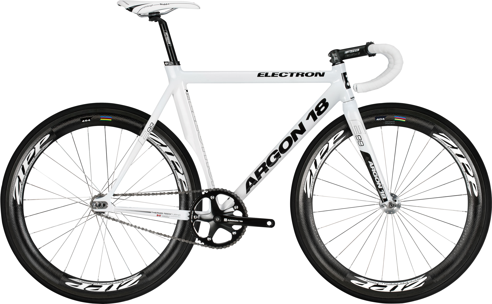
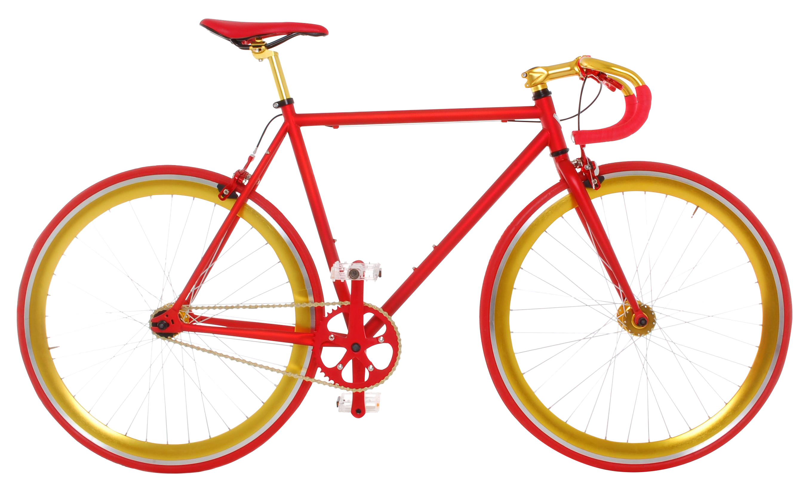
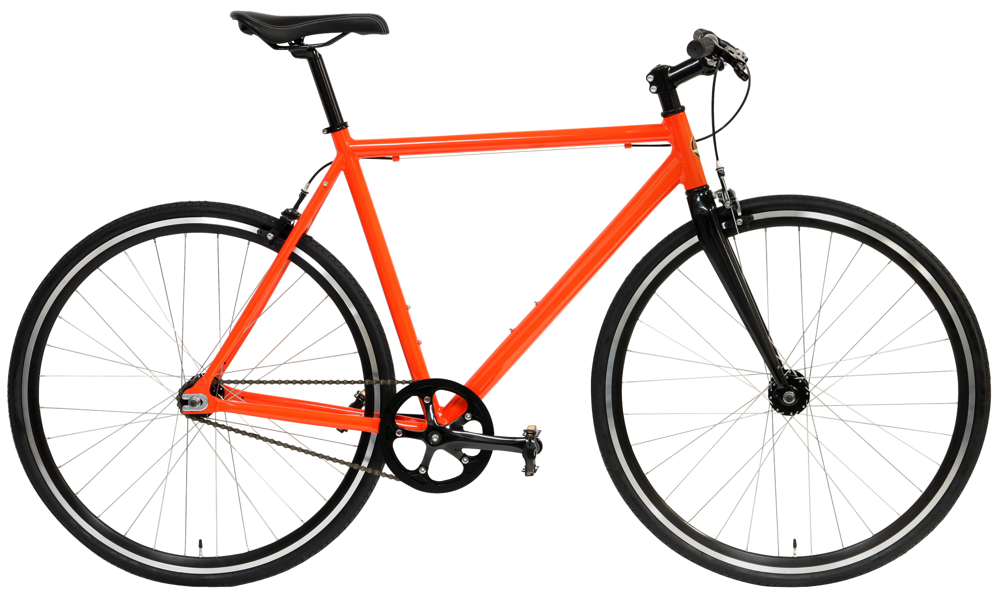

Fixie for Your Ride!!!

This wesite is about a bicycle with no freewheel mechanism. For a bicycle with only one gear, see single-speed bicycle. A fixed-gear bicycle An 18-tooth cog that attaches to the rear hub of fixed-gear bike Track cogs are typically attached and removed from the hub by screwing them with a chain whip. This tool incorporates a lockring spanner for securing a reverse threaded lockring against the cog. A fixed-gear bicycle (or fixed-wheel bicycle, commonly known in some places as a fixie) is a bicycle that has a drivetrain with no freewheel mechanism. The freewheel was developed early in the history of bicycle design but the fixed-gear bicycle remained the standard track racing design. More recently the "fixie" has become a popular alternative among mainly urban cyclists, offering the advantages of simplicity compared with the standard multi-geared bicycle.

